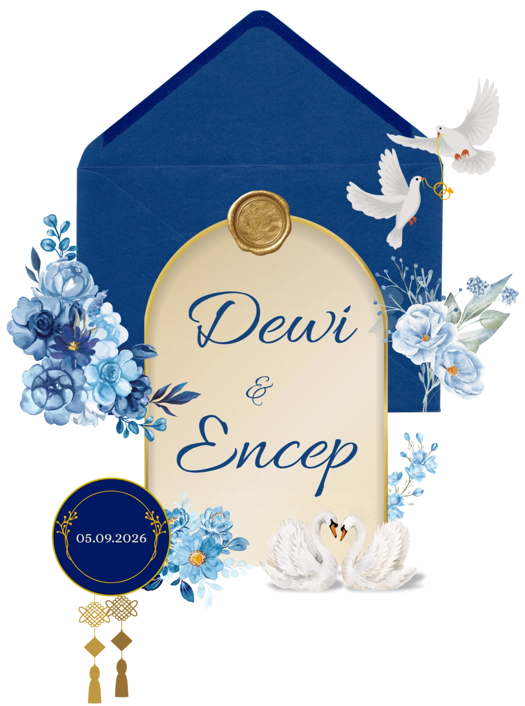
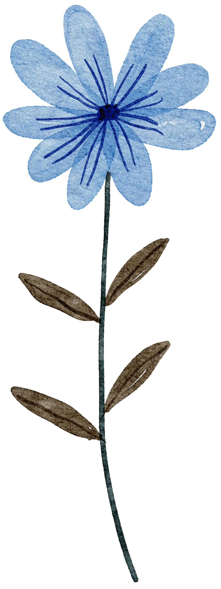

Counting
Days
Hari
Jam
Menit
Detik
September


Assalamu'alaikum Wr. Wb
Tanpa mengurangi rasa hormat, kami mengundang Bapak/Ibu/Saudara/i serta kerabat sekalian untuk menghadiri acara pernikahan kami.
&
Save The Date
"Dan di antara tanda-tanda (kebesaran)-Nya ialah Dia menciptakan pasangan-pasangan untukmu dari jenismu sendiri, agar kamu cenderung dan merasa tenteram kepadanya, dan Dia menjadikan di antaramu rasa kasih dan sayang. Sesungguhnya pada yang demikian itu benar-benar terdapat tanda-tanda (kebesaran Allah) bagi kaum yang berpikir."
(Qs. Ar-Rum : 21)
Akad Nikah
Sabtu, 5 Sept 2026
Pukul: 09.00 WIB
Kediaman Mempelai Wanita
Resepsi
Sabtu, 5 Sept 2026
Pukul: 10.00 WIB
Kediaman Mempelai Wanita
Merupakan suatu kehormatan dan kebahagiaan bagi kami, apabila Bapak/Ibu/Saudara/i berkenan hadir dan memberikan doa restu, Atas kehadiran dan doa restunya, kami mengucapkan terima kasih.
Wassalamu'alaikum Wr. Wb.
Encep & Dewi
Beautiful In White
Shane Filan